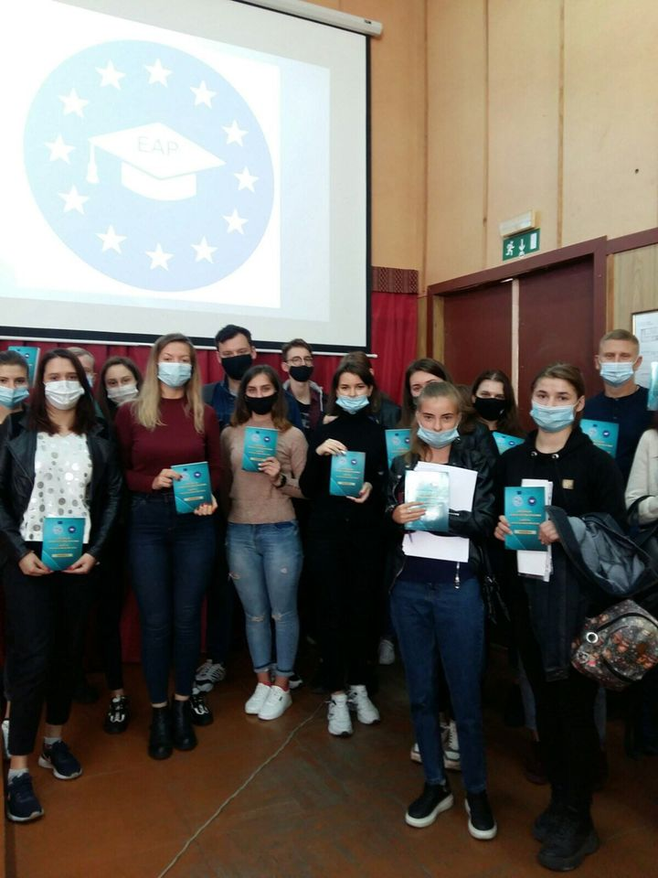
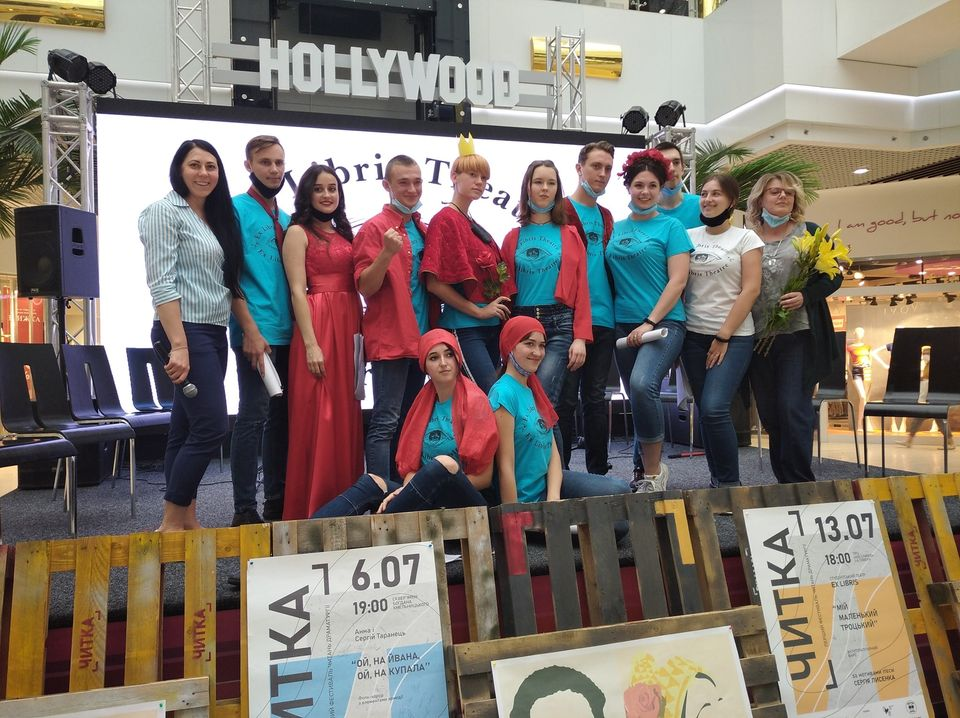
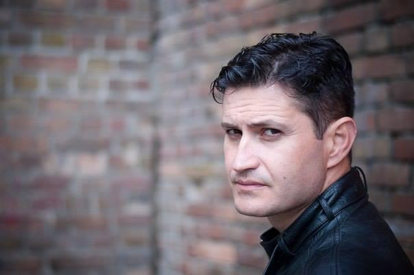
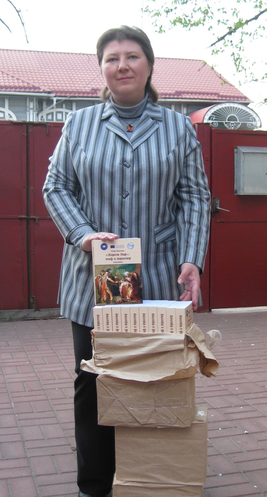

ШАНОВНІ УЧАСНИКИ КОНКУРСУ на кращий учнівський твір в межах гранту ЕВРОПЕЙСЬКІ АНТИТОТАЛІТАРНІ ПРАКТИКИ (програма Еразмус + , напрям ЖАН МОНЕ)!
1. Дуже дякуємо ВАМ і Вашим керівникам за участь в нашому конкурсі!
2. Прийом творів на конкурс завершився 1.05 2021.
3. З 5 травня 2021 р. приступає до роботи конкурсна комісія, кожний з учасників якої визначить три найкращих твори. Їхні автори стануть номінантами конкурсу.
4. Склад конкурсної комісії: професори Столяр М.Б., Колесник О.С, Борисов О.О.; доценти Гергуль С.М., Каранда М.В. і канд. філос.н. – Богун К.М.
5. Остаточний відбір переможців (І – Ш місця) серед номінантів буде визначатися загальною кількістю балів, які поставить незалежно один від одного кожний з членів комісії (основні критерії оцінки див. в таблиці 1) Вся інформацію буде відправлена учасникам особисто. Посилання на файл БАЛИ_відомість.doc
Конкурс на кращий твір
Філологічний факультет Національного університету "Чернігівський колегіум" імені Т. Г. Шевченка оголошує конкурс для випускних філологічних класів на кращий твір на тему "Як я розумію європейські цінності свободи та демократії". Конкурс триватиме до 30.03.2021 року.

Успішно розпочався третій рік реалізації проєкту "Європейські антитоталітарні практики"
Попри карантинні умови успішно розпочався третій рік реалізації проєкту "Європейські антитоталітарні практики". Перше заняття традиційно провела керівниця проєкту - доктор філософських наук, професор Столяр Марина Борисівна. Студенти також отримали примірники практикуму, виданого в рамках проєкту, для підготовки до практичних занять.

Антитоталітарний фарс "Мій маленький Троцький"
На запрошення чернігівського драматурга Сергія Таранця студентський театр EX LIBRIS взяв участь у фестивалі "ЧИТКА".
На одному сценічному майданчику зійшлися славетна сміливиця серед художників Фріда Кало, її велетень-чоловік Дієго Рівера, письменник-сюрреаліст Андре Бретон, дружина автора «Маленького принца» мадам Екзюпері і… Троцький зі своїм вбивцею. Уже в передчутті скандалів богемної тусовки? Даремно. Адже глядача чекали ігри розуму і підсвідомості. А якщо чесно, то ідея п’єси - це відвертий «стьоб» над двома модними і визначними явищами культури ХХ століття – сюрреалізмом і комунізмом. Навіщо?
Коли людство припиняє боятися, воно починає сміятися над своїми страхами. Сучасна молода українська генерація може дозволити собі не знати імен комуністичних ідеологів чи навіть посміятися над певними сторінками історії. Адже декомунізація не закінчується перейменуванням вулиць. Вона має торкнутися і свободи творчості, зокрема драматургічної. Тому п’єса харків’янина Сергія Лисенка про смішний сон, у якому політик Троцький є одночасно і Маленьким принцем і жертвою репресивної м’ясорубки, однозначно варта бути почутою.
Студтеатр під керівництвом доцента Марини Каранди впроваджує експресивно-гротескні методи у творчість, щоб показати можливість комічного ставлення до одіозних сторінок культури ХХ століття. Так Навздогін читці у @Hollywood Mall - ТРЦ Голлівуд фотозвіт від друзів театру @Софії Аксюти та магістрантки @Марини Савеко. Хочеться відмітити вдалий дебют у якості сценографа-дизайнера @Олександри Рижової, яка разом з @Сергієм Тимощуком створила візуальний супровід для глядача. Як актрис вітаємо з дебютом @Валерия Иценко, @Darina Soroka та @Оля Руденок

Український режисер Ахтем Сеітаблаєв розповів про роботу над фільмом «Номери»
“Для мене це історія своєрідного Ноєвого ковчега, де люди, з одного боку, знайшли своє спасіння, а з іншого… – зрада, дружба, любов, боягузтво, вибір, відсутність вибору, страх перед майбутнім, неможливість жити в сьогоденні. Імен у персонажів немає, тому що з такими питаннями стикається людина будь-якої національності. Це суміш жанрів: і гротеск, і буфонада, і мелодрама, і лірика, і психологічна драма, й антиутопія”, – додав Сеітаблаєв. Фільм “Номери” вперше покажуть 18 лютого 2020 р. в межах спеціальних показів, які присвячені ювілею Берлінського міжнародного кінофестивалю (Берлінале).
https://uatv.ua/sumish-zhanriv-seitablayev-rozpoviv-pro-robotu-nad-filmom-nomery/
25 червня 2019 р. в Національному університеті «Чернігівський колегіум» імені Т.Г. Шевченка за підтримки програми Європейського Союзу Erasmus+ (напрям Жана Моне) та ГО «Вектор Плюс» в рамках проекту 599704-EPP-1-2018-1-UA-EPPJMO-MODULE «Європейські антитоталітарні практики» відбувся міжнародний круглий стіл «Антитоталітарні культурні практики».
Спікери з США Gregory Aimaro-Parmut (Indiana University) Helen Oliynyk (Arizona State University), та України презентували доповіді на антитоталітарну тематику. Предметом особливого обговорення стали такі інструменти антитоталітарних практик, як лінгвістика, засоби масової інформації і навіть спорт.

В рамках проекту «Європейські антитоталітарні практики» вийшла друком монографія кандидата філософських наук, доктора культурології , професора кафедри філософії і культурології Національного університету «Чернігівський колегіум» Олени Сергіївни Колeсник.
Монографія присвячена структурі й проблематиці трагедії В. Шекспіра «Король Лір», яка розглядається в найширшому культурологічному контексті: від її морфологічних витоків і паралелей до її впливу на сучасне мистецтво, зокрема, на жанр трилера. Значущість видатної шекспірівської трагедії визначається тим, що в ній поєднались усі ключові ідеї, теми, мотиви й архетипи Європейської цивілізації. Нове розуміння творчості Шекспіра без повторення ідеологічних штампів дозволить кращу зрозуміти ту Європу, до якої,зробивши свій цивілізаційний вибір, крокує Україна.
Керівник проекту доктор філософських наук, професор Столяр Марина
Борисівна 14 квітня 2019 року взяла участь у програмі «Наукові відкриття
для щоденного життя», де розповіла про культурологію як «науку про
виживання в сучасному світі». Акцент робився на тому, що культурологія є
дієвим інструментом подолання тоталітарних ремінісценцій, адже культура –
це передовсім законність, раціональність, толерантність (як діалогічність
й уміння почути іншого).
Про «релігію радянської цивілізації», небезпеку масової культури, сміхові
практики й інструменти карнавалізації сьогоденної політики детальніше в
повній версії програми: https://www.youtube.com/watch?v=gJ1Wzr3zkoQ


.jpg)